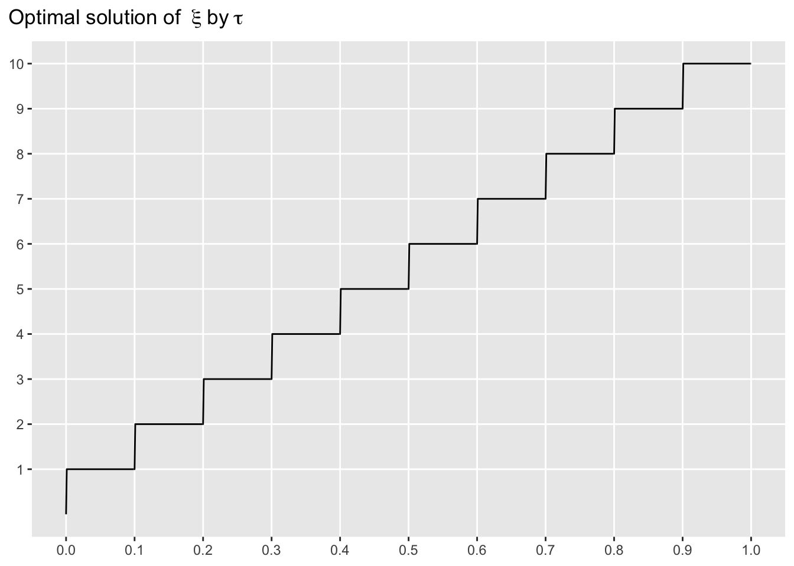
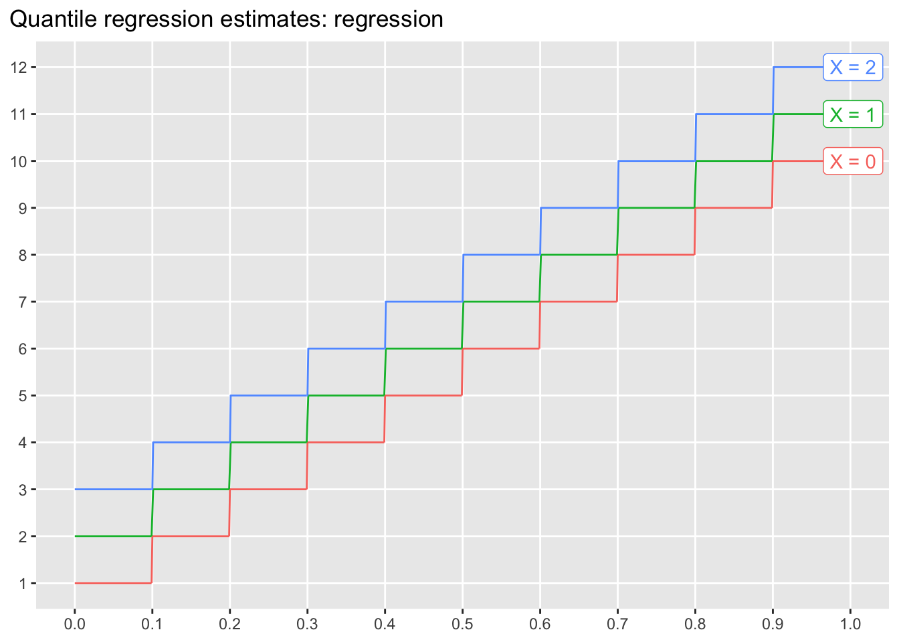

Chapter 1 Quantile regression
library(extraDistr)
library(ggplot2)
library(ggtext)
library(ggrepel)
library(gt)
library(dplyr)
library(tidyr)
library(rlang)
library(purrr)
library(quantreg)
library(lpSolve)우리가 흔히 사용하는 다중회귀분석(multiple linear regression)은 예측변수 \(X\)를 이용하여 연속형 반응변수 \(Y\)의 조건부 기대값, 즉 평균을 예측하는 데 주로 사용한다. 평균은 물론 매우 유용하고 대부분의 경우 가장 중요한 통계치이나, 경우에 따라서 평균과 더불어 반응변수의 분포를 예측하는 것이 의사결정에 큰 도움이 되는 상황들이 있다.
예를 들어, 에너지 산업의 경우, 재생 에너지 생산량의 예측값보다 실제 생산량이 적었을 때 발생하는 비용(e.g. 정전 등)이 실제 생산량이 많았을 때 발생하는 비용보다 크다고 가정하면, 보수적인 관점에서 평균 반응치보다는 좀 더 낮은 변위치(quantile)을 예측하고, 그에 기반하여 예비 전력을 준비하는 것이 적합할 수 있다.
물론, 다중회귀분석 결과를 이용하여 예측값의 범위를 추정할 수 있다. 하지만, 다중회귀분석에 적용되는 가정, 즉 실제 조건부 관측치의 분포가 예측변수 \(X\)값에 상관없이 “동일한 분산”의 “정규분포”를 따른다는 가정은 현실 문제에서 그대로 적용되기 쉽지 않다. 이러한 가정에 위배되는 데이터에 다중회귀분석이 추정하는 예측값의 범위를 사용할 경우, 그로 인해 의사결정 과정에서 최적과는 거리가 먼 결정을 내리게 될 수 있다.
Linear quantile regression은 반응변수의 분포에 대한 특정한 명시적 가정 없이, 연속형 반응변수 분포의 각 quantile과 예측변수 \(X\)간의 선형관계를 추정하는 방법이다.
1.1 Univariate의 예
반응변수 \(Y\)가 아래와 같은 Gumbel distribution을 따른다고 할 때,
\[ F(y) = \exp \left( -\exp \left( - \frac{y - \mu}{\sigma} \right) \right) \]
\(\mu = 0\), \(\sigma = 1\) 에서의 분포는 아래 그래프와 같다.
위 standard Gumbel 분포에서 100,000개의 샘플을 추출한 뒤, 일반적인 최소자승 회귀분석과 quantile regression을 각각 적용하여 95% 예측구간(i.e. [2.5%, 97.5%])을 추정해보자. 이 예에서 예측변수는 존재하지 않으므로, 회귀모형은 y-절편값만을 구한다. 또한, \(y\)값의 실제 분포를 알고 있으므로, 실제 분포에서의 95% 구간을 구해보자.
df_gumbel_random <- tibble(
y = rgumbel(1e5)
)
true_interval <- qgumbel(c(0.025, 0.975)) %>%
set_names(c("lwr", "upr"))
lm_interval <- lm(y ~ 1, df_gumbel_random) %>%
predict(newdata = tibble(.rows = 1), interval = "prediction", level = 0.95) %>%
drop() %>%
`[`(c("lwr", "upr"))
rq_interval <- rq(y ~ 1, df_gumbel_random, tau = c(0.025, 0.975)) %>%
predict(newdata = tibble(.rows = 1)) %>%
drop() %>%
set_names(c("lwr", "upr"))## Warning in rq.fit.br(x, y, tau = tau, ...): Solution may be nonunique
## Warning in rq.fit.br(x, y, tau = tau, ...): Solution may be nonuniquedf_prediction_interval <- t(cbind(true_interval, lm_interval, rq_interval)) %>%
as_tibble(rownames = "method")
df_prediction_interval## # A tibble: 3 x 3
## method lwr upr
## <chr> <dbl> <dbl>
## 1 true_interval -1.31 3.68
## 2 lm_interval -1.94 3.10
## 3 rq_interval -1.31 3.69아래 그래프에서, quantile regression을 사용하였을 때 실제 범위와 가깝게 추정되며, 일반 최소자승 회귀분석을 이용하였을 때에는 추정범위가 실제 범위로부터 멀어짐을 확인할 수 있다.

1.2 Quantile
1.2.1 정의
연속형 변수 \(Y\)의 분포함수를 \(F_Y(y) = P(Y \geq y)\)라 할 때, \(\tau \in (0, 1)\)에 대해 \(\tau\)-quantile은 아래와 같이 정의된다.
\[ Q_Y(\tau) = F_Y^{-1}(\tau) \]
예를 들어, \(Y\)가 \(U(0, 1)\)의 분포를 따를 경우, 0.3-quantile은 0.3이며, \(U(0, 2)\)의 분포를 따른 경우, 0.3-quantile은 0.6이다.
1.2.2 Univariate 추정
분포 \(F_Y(y)\)로부터 \(N\)개의 샘플 \(y_{(1)}, y_{(2)}, \ldots, y_{(N)}\)을 추출하였다 할 때 (\(y_{(1)} \leq y_{(2)} \leq \cdots \leq y_{(N)}\)), 분포 \(F_Y(y)\)의 \(\tau\)-quantile을 추정하는 방법은 여러가지가 있다. R의 stats::quantile() 함수는 총 9가지 추정방법을 지원한다. 이 중, 첫 번째 방법(type = 1)에 대해 알아보자.
stats::quantile() 함수의 default는 type = 7으로 linear interpolation을 이용하며, 해당 방법이 quantile 추정에 더 적합하지만, 본 장에서 알아볼 quantile regression은 type = 1이 지원하는 quantile 추정 함수와 일관성이 있다.
우선, 분포 \(F_Y(y)\)를 \(N\)개의 샘플 \(y_{(1)}, y_{(2)}, \ldots, y_{(N)}\)을 이용하여 아래와 같이 추정한다.
\[ \hat{F}_Y(y) = \frac{1}{N} \sum_{i = 1}^{N} \mathbb{I}(y_{(i)} \leq y) \]
예를 들어, 추출된 10개의 샘플의 값이 \(y_{(1)} = 1, y_{(2)} = 2, \ldots, y_{(10)} = 10\)이었다고 할 때, 분포 \(F_Y(y)\)은 아래와 같이 추정된다.
y <- 1L:10L
Fy <- ecdf(y)위에서 추정된 분포는 불연속적인 step function으로 그 역함수 \(\hat{F}_Y^{-1}(\tau)\) 가 \(\tau \in (0, 1\)에 대해 정의되지 않는다. 이에 아래와 같이 quantile을 다시 정의해보자.
\[ Q_Y(\tau) = \inf \{y \, | \, F_Y(y) \geq \tau \} \]
이 때, \(F_Y(y)\) 대신 \(\hat{F}_Y(y)\)를 대입하여 \(Q_Y(\tau)\)를 와 같이 추정한다.
\[ \hat{Q}_Y(\tau) = \inf \{y \, | \, \hat{F}_Y(y) \geq \tau \} \]
quantile_Fy <- Vectorize(
function(tau, Fy) {
q_list <- eval(rlang::expr(x), environment(Fy))
p_list <- eval(rlang::expr(y), environment(Fy))
q_tau <- q_list[min(which(p_list >= tau))]
return(q_tau)
},
"tau"
)위에서 \(\hat{Q}_Y(\tau)\)는 \(\tau \in [0, 1]\)에서 정의되는 함수임을 볼 수 있다.
1.2.3 최적화 문제
Check function \(\rho_\tau(u)\)를 아래와 같이 정의하자.
\[\begin{equation*} \rho_\tau(u) = u \times (\tau - \mathbb{I}(u < 0)) = \begin{cases} \tau |u|, & u \geq 0\\ (1 - \tau) |u|, & u < 0 \end{cases} \end{equation*}\]

이 때, 식
\[ \mathbf{E}[\rho_\tau(Y - \xi)] = \int_{-\infty}^{\infty} \rho_\tau(y - \xi) f(y) \, dy \]
를 최소화하는 \(\xi\)값은 \(Y\)의 \(\tau\)-quantile 이다.
따라서, \(Y\)의 \(N\)개의 랜덤 샘플 \(y_{(1)}, y_{(2)}, \ldots, y_{(N)}\)이 주어졌을 때, \(\tau\)-quantile은 아래 목적식을 최소화하는 \(\xi\)값으로 추정할 수 있다.
\[ \frac{1}{N} \sum_{i = 1}^{N} \rho_\tau(y_{(i)} - \xi) \]
여기에서, \(\frac{1}{N}\)는 최적해를 구하는 데 영향을 미치지 않으므로, \(\tau\)-quantile의 추정은 아래와 같이 표현할 수 있다.
\[ \hat{Q}_Y(\tau) = {\arg\min}_{\xi \in \mathbb{R}} \sum_{i = 1}^{N} \rho_\tau(y_{(i)} - \xi) \]
위 최적화 문제는 선형 최적화 문제로 변환할 수 있다.
\[\begin{eqnarray*} \min &=& \sum_{i = 1}^{N} \tau u_i^{+} + \sum_{i = 1}^{N} (1 - \tau) u_i^{-}\\ \text{s.t.} & &u_i^{+} - u_i^{-} = y_{(i)} - \xi, \; i = 1, \ldots, N\\ & & u_i^{+}, u_i^{-} \geq 0, \; i = 1, \ldots, N \end{eqnarray*}\]
y <- 1L:10L
quantile_lp <- Vectorize(
function(tau, y, penalty_xi = 1e-10) {
n <- length(y)
penalty_xi <- diff(range(y)) * penalty_xi
obj_vec <- c(penalty_xi, - penalty_xi, rep(tau, length = n), rep(1 - tau, length = n))
const_mat <- cbind(rep(1L, n), rep(-1L, n), diag(n), - diag(n))
const_dir <- c(rep("="))
const_rhs <- y
res <- lp("min", obj_vec, const_mat, const_dir, const_rhs)
opt_sol <- res$solution[1] - res$solution[2]
return(opt_sol)
},
"tau"
)q_solution <- tibble(
tau = seq(0, 1, by = 0.001),
q = quantile_lp(tau, y)
)
lpSolve::lp()는 모든 실수형 변수를 0보다 크거나 같다고 가정한다. 따라서, \(\xi \in \mathbb{R}\)의 해를 구하기 위해서 \(\xi = \xi^{+} - \xi^{-}\), \(\xi^{+}, \xi^{-} \geq 0\) 의 방식으로 decision variable을 변환하였다.
lpSolve::lp() 함수의 결과값으로 리턴한다. 따라서, \(\tau\)값이 step function의 knot에 해당하는 경우에는 lpSolve::lp()의 결과값이 틀린 \(\tau\)-qunatile값을 리턴할 수 있다. 이를 해소하기 위해, 위에서 구현한 quantile_lp()함수에서는 목적식에 추가로 \(\xi\)값에 대한 임의의 작은 패널티를 부과하였다. 이는 간단하지만 안전한 방법이 아니며, 보다 안정적인 알고리즘의 구현이 필요하다.
1.3 Linear quantile regression
1.3.1 최적화 문제
앞 장에서 살펴본 최적화 문제
\[ \hat{Q}_Y(\tau) = {\arg\min}_{\xi \in \mathbb{R}} \sum_{i = 1}^{N} \rho_\tau(y_{(i)} - \xi) \]
는 예측변수가 존재하지 않는 경우를 가정하였다. 설명변수 \(X \in \mathbb{R}^{d}\)가 존재할 때, 주어진 예측변수에 값에 따라 \(Y\)의 분포가 달라진다면 (i.e. \(F_{Y|X} \neq F_Y\)), \(Y\)의 조건부 \(\tau\)-quantile \(Q_{Y|X}(\tau)\)을 추정하는 접근이 필요하다. 여기에서, 조건부 \(\tau\)-quantile이 아래와 같이 예측변수 \(X = (x_1, \, \ldots, \, x_d)\)의 affine 함수라 하자.
\[ Q_{Y|X}(\tau) = \beta_0 + \beta_1 x_1 + \cdots + \beta_d x_d \]
위 함수의 \((d + 1)\)개의 계수 \(\beta_0, \ldots, \beta_d\)를 관측된 \(N\)개의 데이터를 통해 추정함으로써, 임의의 예측변수값에 대해 \(Y\)의 조건부 \(\tau\)-quantile을 추정할 수 있다.
\[ \hat{Q}_{Y|X}(\tau) = \hat{\beta}_0 + \hat{\beta}_1 x_1 + \cdots + \hat{\beta}_d x_d \]
\(i\)번째 관측 데이터의 예측변수 관측치를
\[ \mathbf{x}_i = (x_{i1}, \, \ldots, \, x_{id}) \]
라 하면, 계수 \(\beta_0, \ldots, \beta_d\)의 추정치는 아래 최적화 문제의 해로 얻어진다.
\[ \left(\hat{\beta}_0, \hat{\beta}_1, \ldots, \hat{\beta}_d \right) = {\arg\min}_{(\beta_0, \beta_1, \ldots, \beta_d)} \sum_{i = 1}^{N} \rho_\tau(y_{(i)} - \hat{\beta}_0 + \beta_1 x_{11} + \cdots + \beta_d x_{1d}) \]
위 식을 아래와 같이 보다 단순화해보자. 여기에서, 회귀계수가 \(\tau\)값에 따라 다르다는 것을 명시적으로 표현하기 위해 superscript \((\tau)\)를 사용한다.
\[ \boldsymbol\beta = (\beta_0, \, \beta_1, \, \ldots, \beta_d) \]
\[ \tilde{\mathbf{x}}_i = (1, \, x_{i1}, \, \ldots, x_{id}) \]
\[ \hat{\boldsymbol\beta}^{(\tau)} = {\arg\min}_{\boldsymbol\beta \in \mathbb{R}^{d + 1}} \sum_{i = 1}^{N} \rho_\tau(y_{(i)} - \tilde{\mathbf{x}}_i^\top \boldsymbol\beta) \]
1.3.2 Intercept only
앞 절에서 살펴본 univariate 추정 결과를 R 패키지 {quantreg}내의 quantile regression 함수 rq()를 이용하여 아래와 같이 재현해볼 수 있다. 예측변수가 없는 univariate 데이터이기 때문에 (i.e. \(d = 0\)), 모델에서는 intercept \(\beta_0\)만을 추정한다. (i.e. formula = y ~ 1).
df <- tibble(y = 1L:10L)
rq_fit <- rq(y ~ 1, data = df, tau = seq(0, 1, by = 0.001))## Warning in rq.fit.br(x, y, tau = tau, ...): Solution may be nonunique
## Warning in rq.fit.br(x, y, tau = tau, ...): Solution may be nonunique
## Warning in rq.fit.br(x, y, tau = tau, ...): Solution may be nonunique
## Warning in rq.fit.br(x, y, tau = tau, ...): Solution may be nonunique
## Warning in rq.fit.br(x, y, tau = tau, ...): Solution may be nonunique
## Warning in rq.fit.br(x, y, tau = tau, ...): Solution may be nonunique
## Warning in rq.fit.br(x, y, tau = tau, ...): Solution may be nonunique
## Warning in rq.fit.br(x, y, tau = tau, ...): Solution may be nonunique
## Warning in rq.fit.br(x, y, tau = tau, ...): Solution may be nonuniqueq_solution1 <- tibble(
tau = seq(0, 1, by = 0.001),
q = predict(rq_fit, tibble(.rows = 1L)) %>% drop()
)1.3.3 예측 변수가 존재하는 경우
하나의 예측변수 \(X\)에 대해 두 가지의 값이 관측되었고 (0, 2), 각 경우에 대해 반응변수 \(Y\)가 아래와 같이 10번씩 관측되었다고 하자.
df <- tibble(
x = rep(c(0L, 2L), each = 10L),
y = rep(1L:10L, times = 2L) + x
)| Observed values of response variables Y in training data by value of X | |
|---|---|
| X = 0 | X = 2 |
| 1 | 3 |
| 2 | 4 |
| 3 | 5 |
| 4 | 6 |
| 5 | 7 |
| 6 | 8 |
| 7 | 9 |
| 8 | 10 |
| 9 | 11 |
| 10 | 12 |
위 데이터에서, \(X = 0\)인 경우 반응변수의 관측치는 앞 절의 예와 동일하며, \(X = 2\)인 경우 반응변수의 관측치는 \(X = 0\)인 경우보다 각각 2씩 일정하게 높게 관측되었다. 따라서, 이 데이터를 사용하여 조건부 quantile을 추정할 때, \(X = 0\)인 경우에는 앞 절과 동일하게 추정되며, \(X = 2\)에 대하여는 \(X = 0\)일 경우보다 2만큼 높은 값이 각각의 \(\tau\)에 대해 추정될 것을 예상할 수 있다. 즉,
\[ \hat{\boldsymbol\beta}^{(\tau)} = \left(\hat{\beta}^{(\tau)}_0, \hat{\beta}^{(\tau)}_1\right) \]
에서, \(\hat{\beta}^{(\tau)}_1\)의 값, 즉 예측변수 \(X\)에 대한 회귀계수는 \(\tau\)값에 상관없이 1일 것임을 예상할 수 있다.
\(\tau\)값을 0부터 1까지 0.001씩 증가시키며 회귀모형을 추정해보자.
tau_list <- seq(0, 1, by = 0.001)
rq_fit <- rq(y ~ x, data = df, tau = tau_list)## Warning in rq.fit.br(x, y, tau = tau, ...): Solution may be nonunique
## Warning in rq.fit.br(x, y, tau = tau, ...): Solution may be nonunique
## Warning in rq.fit.br(x, y, tau = tau, ...): Solution may be nonunique
## Warning in rq.fit.br(x, y, tau = tau, ...): Solution may be nonunique
## Warning in rq.fit.br(x, y, tau = tau, ...): Solution may be nonunique
## Warning in rq.fit.br(x, y, tau = tau, ...): Solution may be nonunique
## Warning in rq.fit.br(x, y, tau = tau, ...): Solution may be nonunique
## Warning in rq.fit.br(x, y, tau = tau, ...): Solution may be nonunique
## Warning in rq.fit.br(x, y, tau = tau, ...): Solution may be nonunique이 때, 회귀분석 결과 객체의 원소 rq_fit$coefficients는 각 열이 \(\tau\)값, 각 행이 회귀계수를 나타내는 행렬이다. 여기에서 예측변수에 해당하는 회귀계수가 \(\tau\)값에 상관없이 일정하게 1로 추정됨을 확인해보자.

위 그래프에서, 추정된 intercept (\(\hat{\beta}_0^{\tau}\)) step function의 knots에 해당하는 \(\tau\)값(0.1, 0.2, …, 0.9)을 제외하면, 예측변수에 해당하는 회귀계수가 \(\tau\)값에 상관없이 일정하게 1로 추정되었다.
위에서 추정된 모형을 토대로, 새로운 데이터에 대해 \(\tau\)-quantile을 예측하기 위해 predict() 함수를 사용한다. 예측의 경우, 학습 데이터에서 관측되지 않았던 숫자형 예측변수 값에 대한 반응변수의 \(\tau\)-quantile 또한 예측할 수 있다. 아래에서, 학습 데이터에서 관측되었던 \(X = 0\), \(X = 2\)에 더해, 학습데이터에서 관측되지 않았던 \(X = 1\)인 경우에 대한 \(\tau\)-quantile을 예측해보자.
df_predicted <- tibble(
x = rep(c(0L, 1L, 2L), times = length(tau_list)),
tau = rep(tau_list, each = 3L),
q = c(predict(rq_fit, tibble(x = c(0L, 1L, 2L))) %>% as.vector())
)
위 그래프에서, \(X = 2\)인 경우의 \(\tau\)-quantile 예측값은 \(X = 0\)인 경우보다 2씩 일정하게 높음을 확인할 수 있다. 또한, \(X = 1\)인 경우의 \(\tau\)-quantile 예측값은 \(X = 0\)인 경우보다 1씩 일정하게 높음을 확인할 수 있다.
1.4 예측구간(prediction interval)
\(N\)개의 관측 데이터가 아래 모델을 통해 얻어졌다고 하자.
\[\begin{eqnarray*} y_i &=& \beta_0 + \beta_1 x_i + \varepsilon_i\\ \varepsilon_i &\sim& F \end{eqnarray*}\]
\((\beta_0, \beta_1) = (1, 2)\)라 하고, \(x_i \sim U(0, 1)\)라 할 때, 아래의 몇 가지 다른 확률분포 \(F\)를 이용하여 각각 300개의 관측치가 존재하는 데이터를 생성하여 보자.
\[\begin{eqnarray*} F_1(\varepsilon) &=& N(0, 1^2)\\ F_2(\varepsilon) &=& U(-1, 1)\\ F_3(\varepsilon) &=& Gumbel(-\gamma, 1)\\ F_4(\varepsilon; X) &=& N(0, X^2)\\ F_5(\varepsilon; X) &=& U(-X, X)\\ F_6(\varepsilon; X) &=& Gumbel(-\gamma(1 + X), 1 + X) \end{eqnarray*}\]
- 분포 \(F_1, F_4\)는 정규분포를 나타낸다.
- 분포 \(F_2, F_5\)는 uniform 분포를 나타낸다.
- 분포 \(F_3, F_6\)는 Gumbel 분포를 나타낸다. \(\gamma\)는 Euler–Mascheroni 상수이다.
- 분포 \(F_1, F_2, F_3\)는 \(X\)값에 상관없이 동일한 분산을 지닌다.
- 분포 \(F_4, F_5, F_6\)는 \(X\)값이 증가함에 따라 분산이 증가한다.
- 분포 \(F_1, \ldots, F_6\)는 모든 \(X\)값에 대해 조건부 평균이 0이다.
- 분포 \(F_1, F_2, F_4, F_5\)는 symmetric 분포이며, 분포 \(F_3, F_6\)은 right-skewed 분포이다.
위에서 분포 \(F_1\)을 제외한 다른 모든 분포는 최소자승 회귀분석의 가정(등분산 정규분포)을 위배함을 알 수 있다. 따라서, 최소자승 회귀분석으로부터 얻은 예측구간은 실제 예측구간을 추정하기에 적합하지 않을 것을 예상할 수 있다.
beta0 <- 1
beta1 <- 2
euler <- - digamma(1)
df <- tibble(x = runif(3e2, 0, 1)) %>%
mutate(
F1 = rnorm(n(), 0, 1),
F2 = runif(n(), - 1, 1),
F3 = rgumbel(n(), - euler, 1),
F4 = rnorm(n(), 0, x),
F5 = runif(n(), - x, x),
F6 = rgumbel(n(), - euler * (1 + x), 1 + x)
) %>%
pivot_longer(F1:F6, names_to = "distribution", values_to = "epsilon") %>%
mutate(y = beta0 + beta1 * x + epsilon)6개 데이터셋 각각에 대해 일반 회귀분석과 quantile regression 분석을 수행해보자. 이 때, 분석의 목적은 95% 예측구간을 얻는 것이다.
- 일반 회귀분석의 경우, 평균을 추정하는 회귀모형이 분산 또한 추정하므로, 잘 알려진 공식에 따라 임의의 \(x\)값에 대한 \(y\)값의 예측구간을 추정할 수 있다.
- Quantile regression의 경우, 0.025-quantile과 0.975-quantile을 예측하는 모형을 추정한 뒤, 임의의 \(x\)값에 해당하는 0.025-quantile 예측값과 0.975-quantile의 예측값을 각각 95% 예측구간의 lower bound, upper bound로 간주한다.
nested_df <- df %>% nest(data = - distribution)
lm_fit <- map(nested_df$data, ~ lm(y ~ x, data = .x))
rq_fit <- map(nested_df$data, ~ rq(y ~ x, tau = c(0.025, 0.975), data = .x))이후, 각각의 데이터셋에 대해 실제 95% 구간(true_interval), 일반 최소자승 회귀모형으로부터의 95% 예측구간(lm_interval), 그리고 quantile regression을 이용하여 추정한 구간(rq_interval)을 구해보자.
pred_df <- tibble(x = c(0, 1, by = 0.5))
true_interval <- pred_df %>%
mutate(
F1_lwr = qnorm(0.025, 0, 1),
F1_upr = qnorm(0.975, 0, 1),
F2_lwr = qunif(0.025, - 1, 1),
F2_upr = qunif(0.975, - 1, 1),
F3_lwr = qgumbel(0.025, - euler, 1),
F3_upr = qgumbel(0.975, - euler, 1),
F4_lwr = qnorm(0.025, 0, x),
F4_upr = qnorm(0.975, 0, x),
F5_lwr = qunif(0.025, - x, x),
F5_upr = qunif(0.975, - x, x),
F6_lwr = qgumbel(0.025, - euler * (1 + x), 1 + x),
F6_upr = qgumbel(0.975, - euler * (1 + x), 1 + x)
) %>%
pivot_longer(F1_lwr:F6_upr, names_to = c("distribution", "quantile"),
names_sep = "_", values_to = "epsilon") %>%
mutate(y = beta0 + beta1 * x + epsilon) %>%
pivot_wider(id_cols = c(x, distribution), names_from = quantile, values_from = y)
lm_interval <- map2_dfr(
lm_fit, paste0("F", seq_along(lm_fit)),
function(object, distribution, newdata) {
newdata %>%
mutate(distribution = distribution) %>%
bind_cols(as_tibble(
predict(object, newdata, interval = "prediction", level = 0.95)))
},
newdata = pred_df
)
rq_interval <- map2_dfr(
rq_fit, paste0("F", seq_along(lm_fit)),
function(object, distribution, newdata) {
newdata %>%
mutate(distribution = distribution) %>%
bind_cols(set_names(as_tibble(predict(object, newdata)), c("lwr", "upr")))
},
newdata = pred_df
)위 그래프에서 보이는 바와 같이, 일반 회귀분석의 경우 회귀모형 가정을 따르는 첫 번째 데이터셋을 제외하면 실제 95% 구간과 상당한 차이를 보이는 예측구간을 추정한 반면, quantile regression은 대체로 실제 95% 구간에 근접한 예측구간을 추정하였다.